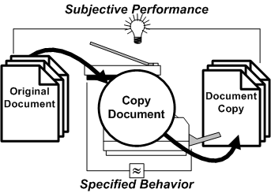

i051101
TROST
InfoNote
The
Working of Computation
Situated Performance
|
|
i051101
TROST
InfoNote |
0.00 2017-07-01 -07:36 -0700 |
- Latest version: The latest version of this InfoNote is available on the Internet at
<http://TROSTing.org/info/2005/11/i051101b.htm>.- This version: The Working of Computation: Situated Performance 0.00 <http://TROSTing.org/2005/11/i051101d.htm>. Consult that page for the latest status and for the most-recent electronic copies of the material.
{Author Note: Need a synopsis and a little table of contents. This is being set up to support one or two web posts that will use the images that I am preparing.}
Fig. 2-1 Abstracted Computational Process 2.1.1 We can abstract out the basic idea of a computation as a conceptual process. Compare (Fig. 2-1) and (Fig. 1-3). This form of diagram is useful in characterizing processes as bridges between inputs and outputs at arbitrary levels of abstraction away from the level of the machine. Variations of this simple conceptualization go back to the 1950s, at least.
2.1.2 This little diagram uses a version of Data Flow Diagrams (DFDs). It is not necessary that the diagrams be interpreted as flows. The basic idea is that there is a dependency of the output on the process and its inputs. For our purpose, here, we will refer Performance Architecture diagrams.
2.1.3 We want something more grounded. Although this diagram is no more abstracted than computer execution depiction (Fig. 1-3), it is in a form that is easier to apply to more-grounded, understandable situations.
Fig. 2-2 Copying Document (Performance Architecture) 
2.2.1 Decorating the performance. Here, the basic performance architecture diagram has been decorated to suggest the intended interpretation: use of an office copier to copy a document (Fig. 2-2).
2.2.2 Here the input and output are taken to be material objects. The process senses images on the original-document pages and images are formed in some way on the surface of the output document-copy pages.
2.2.3 The process is whatever causes copies to be made. This includes what the appliance does to sense the original and then to deposit a replica image on the blank sheets fed to the output.
2.2.4 We don't know why the copy is being made. There is nothing at this level to indicate the purpose for copying the document, the nature of the original document, and what constitutes an acceptable document copy.
2.2.5 Subjective quality matters. Although we aren't saying what the subjective considerations are in this case, we want to emphasize that they generally do apply. The light-bulb symbol and the lines bridging between the material inputs and outputs are used to indicate the presence of subjective performance requirements.
2.2.6 Typical subjective performance. It is not unusual for documents to be copied in a trial-and-error process. Settings on the copier are manipulated until an acceptable copy is made. There may also be selection of enlargement and reduction features, selection of special image-improvement features, and also selection of ways for the finished document to be organized (two-sided printing, collation, stapling, and even binding). The original document may have elements of color that are replaced by gray or various shadings on the document copy. If the original is a photograph, screening might be applied to preserve as much of the tonality as possible, rather than having blotchy solid color(s) in the copy. The main point is that a wide variety of adjustments and trials may be performed at the direction of the human operator to obtain an acceptable result. It is in this way that we train ourselves to adapt to the idiosyncrasies and adjustments of our appliances and obtain the results that we find acceptable for the task at hand.
2.2.7 Specified behavior is the committed performance. Appliances such as office copiers have specified behavior and defined performance. This is determined by the producers of the device. It might be summarized in some way in the specifications provided to users and operators and featured in imprecise terms in sales materials and product literature. The complete specified behavior might not be known to the operator, nor would it be expected to be. Specified behavior, shown at the bottom of the diagram with the wavy equality symbol, involves tolerances and variations of materials, operating conditions, and wear and adjustment of the device. The specified behavior may extend to conditions for consumables, including the quality of the blank paper and supplies used to produce the marking on pages of the document copy.
2.2.8 Specified behavior is confirmable and adjusted for. In the case of an appliance such as an office copier, there are procedures for confirming that specified behavior is being delivered. This can be accompanied by the use of special test documents that are used for adjusting the appliance to operate reliably within tolerances for the specified behavior. There may be user-accessible adjustments that can also be made without requiring a specialist. Notice that the specified behavior is at the edge of the interfaces of the device, in contrast with the subjective performance which, in this case, is concerned with the relationship between the original document and the document copy as reflected in the intention of the operator as much as the regulated behavior of the appliance.
2.2.9 Differentiation of subjective performance and specified behavior is important. When we deal with digital computers and software, the precise specified behavior is often unknown (and might even be accidental). Users and operators engage in trial-and-error behavior and experience/training in general situations to obtain a desired result in a particular situation. This is a common situation, whether dealing with commodity software products (such as office-productivity programs), internal business applications (a human-resources system), or using the Internet (searching Google, authoring blog pages).
2.2.10 Specified behavior is intended to anticipate subjective performance. The developers of a product achieve specified behavior as part of their attention to varieties of anticipated usage. But this is not the same as knowing what every situation will be and why the appliance is being used on any specific occasion.
2.2.11. What it is, what it is for, and how it is being used can all be different. You can apply this differentiation to many everyday situations: making toast, operating an automobile, and using a digital camera. Some of the most pronounced cases arise in the use of digital computers and their software programs.
2.2.12 There are many implementations of performance architectures. Notice that there can be alternative arrangements for achieving essentially the same performance. For example, you can watch movies at the cinema, on a home theater system, or over the Internet using a home computer. The copying of documents could be modified to have the output produced at a remote location, or to use a computer scanner and a printer attached to a computer. There are many details that can vary and, examined as organized performance architectures, have many levels of specified behavior until we arrive at the realm in which subjective performance matters. Many of these variations may reflect differences in requirements and expectations. Others may, in a given situation, simply exploit the resources at hand. Some specified-behavior qualities may be critical to satisfaction of a requirement, others may be unimportant.
2.2.13 It's never all in the diagrams. It should be apparent that not all of the information about specified behavior and subjective performance, even the required aspects of either, are conveyed in the diagrams. A great deal is left to intuition, tacit understanding, and the intended interpretation conveyed in an accompanying narrative. We need to keep that in mind.
Levels of Abstraction
How we work our way up and down the layers of abstraction - Is this maybe in the next treatment, along with What Programmers (Should) Know.
In this characterization, the only "meaning" to the computation, in the context of the computer, is simply what it does. Not what it's for. Here the computer is a pure "doer," a machine.
We are now close to being able to consider what a computer knows. We'll look at what a computer (program) can't know, and we will
The digital-human need have no concern for, nor even knowledge of, the intended purpose served by the calculation in order to carry it out. Let's look at that. The digital-human, under the conditions described, has no basis for inferring what the procedure is for.
{AuthorNote: Don't know if I'll bother with this here, in the first published version. Might add it as a separate commentary page too.}
Could we put layers on top of layers and
The simplifications made for focus and to have the illustrations stand out.
Almost-arithmetic.
Could something else emerge. Perhaps.
But for now, it is not clear how a computer complex will have enough presence and awareness at the scale of human existence, to interact with the world as something experienced.
Until that interesting event, let's stick with the notion that computers will continue to be instructed by programs in machine language and that these programs, at no matter how many levels of remove, are written by people in a way that what the computer does and what the program is serves a human purpose that is external to and afforded with that.
{Author Note: Distill these down to only what is needed for here, without the anecdotal stuff, which belongs elsewhere. Some of this goes with what programmers know and is not needed here.}
- Abelson, Harold., Sussman, Gerald Jay., Sussman, Julie (1996).
- Structure and Interpretation of Computer Programs, second edition. MIT Press (Cambridge, MA: 1996). ISBN 0-262-01153-0.
- Bratman, Harvey (1961).
- An Alternate Form of the "UNCOL Diagram." Comm. ACM 4, 3 (March 1961), 142. Available at <http://doi.acm.org/10.1145/366199.366249>. A more-extensive formalization was later developed in (Early & Sturgis 1970).
The search for a Universal Computer Oriented Language (UNCOL) began in 1958 as a way to reduce the complexity of migrating programming languages onto different machines (Strong, et.al.). Thus began the long and circuitous march of programming-system technology toward formulation of .NET, the Common Language Infrastructure, and its Common Intermediate Language (CIL). I omit Java from the apostolic succession here for the simple reason that the UNCOL effort rejected the idea of one programming language for all machines as a viable solution.
Harvey Bratman provided a brilliant diagramming technique for characterizing the creation of programs using computers followed by subsequent execution of those programs to create further programs, and so on. This was of immeasurable value in being able to grasp and visualize all of the moving parts and the conditions that have to be preserved in bootstrapping implementations of programming languages atop others and across platforms. The diagrams provide serious purchase on what, in using UML (OMG 2005, Chapter 10), are hinted at by "execution architecture" and "deployment." That is part of my motivation for reincarnating the Bratman diagram here.
Although I have gleefully used Bratman diagrams over the years, something has nagged at me almost from the moment that the article appeared. I'm bothered by the failure to distinguish between: (1) the function that is achieved versus the procedure that is followed, (2) procedures and the expressions of them, and (3) expressions of procedures versus the mechanical behavior that realizes conduct of the procedures. Although those confusions might be thought harmless, I am concerned that we have missed something essential by not teasing apart the distinct concepts. The current appraisal of "What Computers Know" and leading up to "What Programmers (Should) Know" is my effort to lay my concern to rest. Careful creation of a consistent architectural formalism that manages the separation will be undertaken in completing TROST InfoNote i051001: Execution Architecture.
- DeMarco, Tom (1979).
- Structured Analysis and System Specification. Yourdon Press Prentice-Hall (Englewood Cliffs, NJ: 1978, 1979). ISBN 0-13-854380-1.
Although we speak of data flow (and document flow in the historical workflow usage), these diagrams, described in Chapter 4, are esssentially about representing a system as a network of component processes, and the connecting lines identify interfaces on which the mutual components depend.
- Early, Jay., Sturgis, Howard (1970).
- A formalism for Translator Interactions. Comm. ACM 13, 10 (October 1970), 607-617. Available at <http://doi.acm.org/10.1145/355598.362740>.
- Hamilton, Dennis E. (2005)
- What Computers Know. {cite the companion folio and also the blog post.}
- Hamilton, Dennis E. (2008).
- Reality is the Model. (web log article) Orcmid's Lair (May 29, 2008). Available at <http://orcmid.com/blog/2008/05/reality-is-model.asp>.
- Hopper, Grace Murray (1952).
- The Education of a Computer. Proc. Association for Computing Machinery national meeting, May 2-3, 1952.
In addition to describing a model of computation and man-machine interaction as part of the programming and problem-solving process, this paper discusses compiling of programs as a process of stitching together subroutines from a large library, with some ideas of optimization and of routines of a type being generated by other routines. Early concern about the overhead of calling subroutines are reflected in the paper. The conceptualization is not sharp, reflecting the early state of thinking on software as an output of computation.- Object Management Group (2005).
- Unified Modeling Language: Superstructure, version 2.0. Object Management Group specification, document formal/05-07-04, Object Management Group, Bedford, MA (August 2005). Available in PDF format at <http://www.omg.org/technology/documents/formal/uml.htm> accessed 2005-11-13.
- Strong, J., Wegstein, Joseph., Tritter, A., Olsztyn, J., Mock, Owen., Steel, Thomas B.,Jr. (1958)
- The Problem of Programming Communication with Changing Machines: A Proposed Solution. Report of the Share Ad-Hoc Committee on Universal Languages, Part 1. Comm. ACM 1, 8 (August 1958), 12-18. Available at <http://doi.acm.org/10.1145/368892.368915>.
The last time I saw Tom Steel (at an OODB meeting in Anaheim), I taunted him a little by saying I remembered UNCOL. He conceded the sins of his youth and we both laughed. I'm not so sure which of us was the most surprised, later on, to see the difficulties of UNCOL largely overcome at last by Moore's Law, the Java Virtual Machine, the Common Language Infrastructure, and other innovations. I had thought that it would take something like Peter Landin's applicative-language functional-programming approach. The 80-20 rule apparently demands less than that, although there's a resurgence of interest in functional programming and dynamic languages as their features come to be appreciated as additions to the ever-popular programming-language approaches.

|
created 2008-09-26-14:25 -0700 (pdt) by
orcmid |